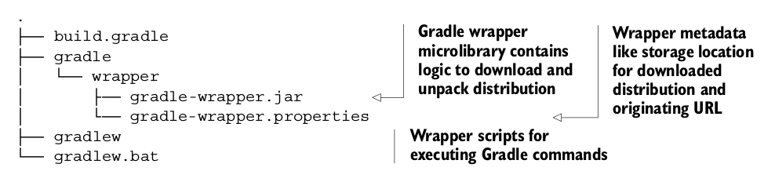

Gradle包装器
你把你的Web应用给你的同伴Mike看，他看完之后觉得很有意思想加入你给项目添加一些高级特性。你把代码添加到版本控制系统当中（VCS）,因此它可以下载代码，由于Mike从来没有用过Gradle构建工具，所以他问你用的哪个版本的Gradle以及怎么安装Gradle，他也不知道怎么去配置Gradle，从以往的经验来看，Mike清醒的知道不同版本的构建工具或者运行环境对对构建的影响有多大。对于在一个机器上可以运行，另一个机器无法运行的情况他看的太多了，经常是由于运行时环境不兼容的原因。
对于这个问题Gradle提供了一个非常方便和实用的方法：Gradle包装器，包装器是Gradle的一个核心特性，它允许你的机器不需要安装运行时就能运行Gradle脚本，而且她还能确保build脚本运行在指定版本的Gradle。它会从中央仓库中自动下载Gradle运行时，解压到你的文件系统，然后用来build。终极目标就是创建可靠的、可复用的、与操作系统、系统配置或Gradle版本无关的构建。
配置Gradle包装器
在设置你的包装器之前，你需要做两件事情：创建一个包装任务，执行这个任务生成包装文件。为了能让你的项目下载压缩的Gradle运行时，定义一个Wrapper类型的任务 在里面指定你想使用的Gradle版本：
task wrapper(type: Wrapper) {
gradleVersion = '1.7'
}
然后执行这个任务：
$ gradle wrapper
:wrapper
整个过程如下图：

执行完之后，你就能看到下面这个wrapper文件和你的构建脚本：

记住你只需要运行gradle wrapper一次，以后你就能用wrapper来执行你的任务，下载下来的wrapper文件会被添加到版本控制系统中。如果你的系统中已经安装了Gradle运行时，你就不需要再添加一个gradle wrapper任务，你可以直接运行gradle wrapper任务，这个任务会使用你的Gradle当前版本来生成包装文件。
使用包装器
上面生成了两个执行脚本，一个是运行在*nix系统上的gradlew，另一个是运行在Windows系统上的gradlew.bat,你只需要根据你的系统环境来执行对应的那一个脚本，比如上面提到的Mike执行了gradlew.bat jettyRun任务，下面是输出：
> gradlew.bat jettyRun
Downloading http://services.gradle.org/distributions/gradle-1.7-bin.zip
...
//Unzips compressed wrapper file to predefined local directory
Unzipping C:\Documents and Settings\Mike\.gradle\wrapper\dists\gradle-1.7- bin\35oej0jnbfh6of4dd05531edaj\gradle-1.7-bin.zip to C:\Documents andSettings\Mike\.gradle\wrapper\dists\gradle-1.7-bin\35oej0jnbfh6of4dd05531edaj
Set executable permissions for: C:\Documents and Settings\Mike\.gradle\wrapper\dists\gradle-1.7- bin\35oej0jnbfh6of4dd05531edaj\gradle-1.7\bin\gradlew.bat
:compileJava
:processResources UP-TO-DATE
:classes
> Building > :jettyRun > Running at http://localhost:9090/todo
整个过程如下：

自定义包装器
一些公司的安全措施非常严格，特别是当你给政府工作的时候，你能够访问外网的能力是被限制的，在这种情况下你怎么让你的项目使用Gradle包装器？所以你需要修改默认配置：
task wrapper(type: Wrapper) {
//Requested Gradle version
gradleVersion = '1.2'
//Target URL to retrieve Gradle wrapper distribution
distributionUrl = 'http://myenterprise.com/gradle/dists'
//Path where wrapper will be unzipped relative to Gradle home directory
distributionPath = 'gradle-dists'
}
非常直接明显对不对？你还可以了解更多的特性，如果你想了解更多关于Gradle包装器DSL的信息，可以查看这个网址：http://gradle.org/docs/current/dsl/org.gradle.api.tasks.wrapper.Wrapper.html